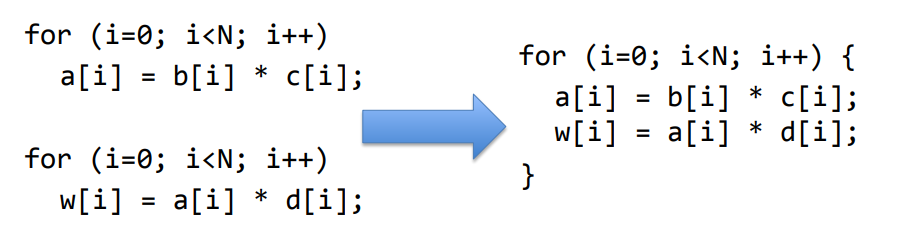

Compilation and Optimizations
- Chapter 5 (5.1 - 5.7)
Intro to Compilers
Overview
▪ Programs are divided into compilation units – Provide degree of modularity – Each commonly has main file (.c) for source code – Header files (.h) declare public interfaces of units ▪ Each unit is compiled separately to relocatable object code – Allows creation of object-code libraries ▪ A linker combines these into an executable, resolving references between units ▪ A loader sets up the executable program in memory and initialises data areas, prior to the program being run
Declaration vs Definition
▪ Declaration: inform the compiler of the existence of a variable or function
void swap(int *a, int *b); // in .h file
▪ Definition: provide function body; allocate memory for local variables
void swap(int *a, int *b) { // in .c file
int temp = *a;
*a = *b;
*b = temp;
}
Compilers Frontend
Compilers
• Bare minimum for a functional compiler
• Good compilers o Produce meaningful errors on incorrect programs o Produce fast, optimized code
Detailed Compilation Flow

The C pre-processor
▪ Includes – imports header files
#include <stdio.h>
#include "A.h"
▪ Text substitution, e.g. define constants
#define NAME value
▪ Macros (inline functions)
#define MAX(X,Y) (X>Y ? X : Y) // careful with macros!
▪ Conditional compilation
#ifdef DEBUG
printf("Debugging message");
#endif
// $ gcc -DDEBUG
▪ Inserts header files to C source code file in response to
#include <stdio.h>
#include "A.h"
▪ Performs macro substitution
– E.g. In response to
– All references to CONST in source will be replaced by 5
▪ No type checking or anything, just a direct textual replacement
▪ To examine the output gcc pre-processor $ gcc –E file.c –o output.c
Anatomy of a Modern Compiler

Frontend (analysis)
• Read source program • Break it up into basic elements • Check correctness, report errors • Translate to generic intermediate representation (IR)
Back-end (synthesis)
• Optimize IR • Translate IR to ASM • Optimize ASM
Frontend Stages
• Lexical analysis (scanning): Source -> List of tokens • Syntactic analysis (parsing): Tokens -> Syntax tree • Semantic analysis (mainly, type checking)
Intermediate Representation
• Internal compiler language that is: ○ Language-independent ○ Machine-independent ○ Easy to optimize • Why yet another language? ○ Assembly does not have enough info to optimize it well ○ Enables modularity and reuse
Data flow graph (DFG)
▪ Represents flow of data inside “basic block†▪ Basic blocks – Code with one entry one exit – May have a branch at the end, not before ▪ Does not represent control. ▪ Describes the minimal ordering requirements on operations. ▪ Static Single Assignment is employed to ease optimizations
Static Single Assignment (SSA)
▪ If a variable is assigned more that once in the source code: – SSA keeps only the first assignment – The rest of the assignments are renamed to temporary variables

DFG and Partial Orders

Optimizations
Control-Data Flow Graph (CDFG)
▪ Represents control and data flow – Nodes: basic blocks – Edges: branches between basic blocks

IR Optimization
▪ Machine independent optimizations – Code optimizations independent of the target architecture – e.g. dead code elimination, constant propagation, constant folding etc. ▪ Machine dependent optimizations – Specifically aim at target architecture – May not be applicable directly across different architectures – e.g. Instruction selection, register allocation etc. ▪ Perform a set of passes over the CFG – Each pass does a specific, simple task over the CFG – By repeating multiple simple passes on the CFG over and over, compilers achieve very complex optimizations ▪ Example optimizations: – Dead code elimination: Eliminate assignments to variables that are never used, or basic blocks that are never reached – Constant propagation: Identify variables that are constant, substitute the constant elsewhere – Constant folding: Compute and substitute constant expressions
Code Generation
▪ Translate optimized IR to assembly ▪ Register allocation: Map variable to registers – If #variables > #registers, map some to memory and load/store when needed ▪ Translate each assignment to instruction – Some assignments may require more than one instruction if ISA does not have operations ▪ Emit each basic block: labels, assignments and branches ▪ Lay out basic blocks, remove superfluous branches ▪ ISA and CPU specific optimization – E.g. reorder instructions if possible
Summary: Modern Compilers
Loop Transformations
▪ Why is it important – Programs spends lots of time in loops ▪ Goal – Reduce loop overhead – Increase opportunities for other optimizations – Improve pipeline and memory system performance
#1: Loop Unrolling
▪ Duplicates loop body ‘n’ times and adjust loop bounds – Reduces number of comparisons/branches to test loop exit • Branches are big performance bottleneck in hardware – Increases loop body size • Enables more optimizations • More register pressure
#2: Loop Fusion
▪ Combines two (or more) loops into one
- Pros:
- May improve data locality
- Reduces loop overhead
- May enable better instruction scheduling
- Cons:
- May hurt data locality
- May hurt I-cache hit rate

#3: Loop Distribution/Fission
▪ Divides a loop into two (or more) loops
- Pros:
- Enables optimizations: 2nd loop is parallel loop
- Reduces register pressure
- Cons:
- Increases loop overhead
#4: Loop Interchange
▪ Switches the order of loops in a loop nest ▪ Can improve data locality and parallelism

#5: Loop Tiling
▪ Breaks a loop into a set of nested loops – Each inner loop operates on a subset of data ▪ Changes memory access pattern: Can improve locality
Function Inlining and Register Allocation
Procedure/Function Inlining
▪ Replaces call with the body of the callee (called function) ▪ Programmer can ask compiler to inline a function – C provides inline keyword ▪ Compiler itself can inline a function if deemed beneficial

▪ Function calls can be costly – Direct costs: arguments and results passing, call/return (branch) instructions, stack frame maintenance etc – Indirect costs: breaks intra-procedural analysis to inter-procedural analysis (which is more complex) ▪ Inlining removes these costs ▪ Downside – Can increases code size – Can reduce instruction cache hit rate
Register Allocation
▪ Registers temporarily hold variables ▪ Aim: Allocate registers to variables such that memory accesses are minimized – Good register allocation is key to performance as memory accesses can be costly (imagine cache misses) ▪ Compilers analyze lifetime of variables for register allocation ▪ Programmers could hint which variables to keep in registers – C supports register keyword – Modern compilers just ignore it! ▪ Some variables always need to be in memory – volatile keyword provides this functionality – Still brought to a register for using the value
Register Allocation with Graph Coloring
▪ Edges between variable that are live at the same time ▪ Represent each register with a color ▪ Color the nodes with as few colors as possible – No edge must share a color ▪ NP-complete – Compilers use heuristics to reach a good solution
Instruction Selection
▪ IR code can be translated to a number instruction sequences depending types of instructions in ISA ▪ IR expressions are represented as graphs (CDFG) – Find the best template for expression – The template should minimize the chosen cost metric
Assembler and linker
▪ Generate machine instructions (binary) from assembly instructions (symbolic) – One to one translation (usually) ▪ Translate labels into addresses ▪ Handle pseudo-ops ▪ Two pass approach – First pass: Generate symbol table – Second pass: resolve labels and generate machine instructions
Symbol Table
▪ Generating symbol table: – Scan the file to collect labels and their addresses ▪ Addresses are generally relative to the first instructions in the file
Object File
▪ Output of assembler ▪ Several standards – ELF (Unix), ECOFF (Windows), Mach-O (OS X) ▪ Object file includes – Symbol table – Program code (.text segment) – Data (.data segment) – Information about relocatable parts – Debug data (references to source files)
Linker
▪ Takes multiple object files and libraries and generates one executable file – Combines all object file segments (text, data) – Determines start address for all modules – Combines all symbol tables – Resolves all symbols ▪ Transforms relative address to absolute addresses ▪ Produces an error if cannot find a label/symbol in merged symbol table
Dynamic Linking
▪ Most operating systems can link modules at load time – e.g. shared libraries (.so on linux platforms) – Saves storage space